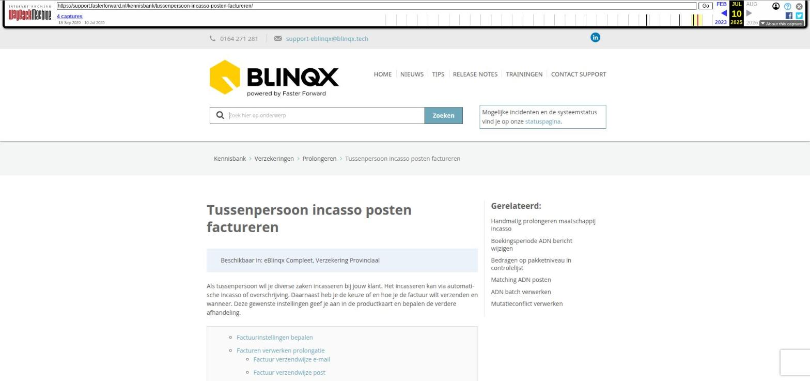

Urgente registratie

Tekstinhoud
Urgente registratie
Indien je een registratie in het dossier wilt maken welke duidelijk voor iedereen te zien is, kan je een urgente registratie aanmaken.
Urgente registratie aanmaken
Urgente registratie zien
Urgente registratie wijzigen of verwijderen
Urgente registratie aanmaken
Voor het aanmaken van een urgente registratie klik je op 'Urgente registratie aanmaken'. Deze vind je terug bij de snelkoppelingen in het dossier:
Urgente registratie zien
Nadat je deze hebt aangemaakt, zie je een uitroepteken in de dossierheader verschijnen. Let op: als je alleen het onderwerp invult bij het aanmaken van de registratie dan wordt er wel een registratie gemaakt, maar het oranje uitroepteken wordt niet in de header getoond. Hiervoor moet je ook het berichtveld invullen. Door op het oranje uitroepteken te klikken kan je de registratie zien.
Ook kan je de urgente registratie terugzien onder het tabblad Communicatie – Registraties. Deze registratie heeft als soort registratie 'Urgente registratie'. Hierop kan je eventueel ook filteren.
Urgente registratie wijzigen of verwijderen
Wil je de aangemaakte urgente registratie wijzigen of verwijderen? Klik dan nogmaals op 'Urgente registratie aanmaken', Je krijgt dan jouw urgente registratie te zien en kunt deze hier wijzigen. Door de urgente registratie geheel leeg te maken en vervolgens op te slaan wordt deze verwijderd.
Laatste update: 15 oktober 2025
Was deze informatie nuttig?
Ja Nee